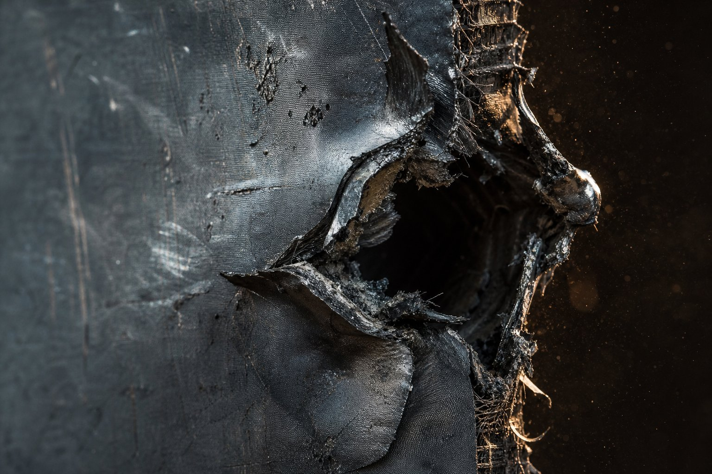

1. Les 6 changements qui touchent tout le monde
| Changement | Détail | Conséquence |
|---|---|---|
| Portée effective augmentée | Sur la majorité de l'armurerie | Les fusils gardent leur létalité plus loin : Valley et Airport deviennent plus dangers à l'armement lourd |
| Headshots renforcés | Les tirs à la tête paient davantage, de façon plus constante | Le TTK global est allongé mais les duels de précision sont plus rapides |
| Plafond d'équipement par mode | Normal : T4 et moins · Lockdown : T5 et moins · Forbidden : T6 | On ne peut plus écraser un squad déshérité en kit rouge |
| RNG de pénétration T5/T6 supprimé | Pas de « petite chance » de percer une classe V ou VI | Il faut ramener la durability de la plaque sous un seuil pour percer de façon constante |
| Ricochets supprimés | Plus de rebond sur casques et masques | Perte de durabilité plus rapide sur les casques et masques de classe V et VI |
| Flashlight nerfé | Éclairage réduit, ergonomie ajustée à -7 | Fin de l'aveuglement garanti en zone sombre |
2. Les plafonds par mode
| Mode | Équipement et munitions | Déblocage |
|---|---|---|
| Normal | Tier 4 et inférieur (casques, masques, rigs, gilets, munitions) | Accessible dès le début |
| Lockdown | Tier 5 et inférieur | Niveau 12 |
| Forbidden | Tier 6 autorisé | Niveau 30 |
| Infected Zone / Heavy | Farm et Airport : contamination lourde | Koen, entrées illimitées |
| Zombie Endless | Loadout imposé par la classe | Niveau 8 |
Ce que le plafond change vraiment
Avant, on pouvait « hot-drop » un kit complet dans un lobby de bas niveau pour écraser les déshérités. C'est terminé : en Normal, personne ne vient avec une classe V. Conséquence directe : la T4 devient le cœur du meta — les munitions T4 (M855A1, BP) sont le sweet spot de la communauté, et le stash de T6 que vous conservez n'a plus de valeur en Normal : c'est de la valeur immobilisée pour rien.
3. Armures et pénétration
- Pierce Level = plancher(Pénétration ÷ 10), comparé au Niveau d'armure de la plaque visée (et non à un tableau externe).
- Avec le RNG supprimé sur la classe V et VI : sous le niveau, ça ne perce pas. On ne compte plus sur la chance.
- La percée « constante » exige de réduire la durability de la plaque sous un certain seuil : le TTK au torse est donc plus long, il faut poser plusieurs balles dans la même zone.
- Ricochets supprimés sur tous les casques et masques : le tir à la tête ne « ricoche » plus sur un casque de classe V/VI, mais le casque perd plus vite en durabilité.
4. Ajustements d'armes
Les notes de lancement S7 confirment l'augmentation de la portée effective et les season kits. Les valeurs chiffrées ci-dessous proviennent des notes bêta publiées par la communauté (serveur de test) : elles indiquent la direction des ajustements et servent de référence, mais seule la mise en production fait foi.
| Arme | Ajustement (notes bêta) | Lecture tactique |
|---|---|---|
| 188 | Puissance augmentée, portée effective 82 → 102, recul de tir réduit | Devient une option de sniper de précision plus crédible |
| H416 | Recul horizontal augmenté en fin de rafale | Contrôle plus exigeant sur les longues rafales |
| ACE31 | Contrôle vertical 52 → 48, horizontal 28 → 27 ; canon standard légèrement affaibli | Contrôle un peu meilleur, canon de base un peu moins fort |
| FAMAS | Ergonomie 55 → 63 | Maniement nettement plus confortable |
| MCX | Portée effective 30 → 35 | Plus de marge à distance moyenne |
| FAL | Contrôle vertical 40 → 45, horizontal 22 → 27 | Plus dur à contrôler — sauf avec le Burst Kit saisonnier |
| T03 | Recul amélioré sur la première moitié de rafale | Spray initial plus maîtrisé |
| UMP45 | Cadence 600 → 650 | Petit gain de DPS en CQB |
| M110 | Recul de tir réduit | Combine avec le Binary Trigger saisonnier |
| AK-74N | Recul de tir amélioré | Arme budget plus agréable |
| AN-94 | Recul vers le haut réduit entre les deux premiers tirs | Première rafale plus propre |
| VSS | Recul de tir réduit | Plus de confort en tir soutenu |
| 5.7×28 SS190 | Pénétration 41 → 42, dégâts d'armure 18 → 19 | Petit regain d'intérêt pour les calibres APDS |
Les 4 season kits, vrais game-changers
Ils modifient fondamentalement l'arme concernée : le M110 Binary tire 2 projectiles par gâchette (dégâts considérables), le MPX Vulcan ouvre une branche de munitions à chair, le FAL Burst Kit fait passer la cadence de l'arme de « moyennement-faible » à « élevée », le PCC-9 Fully-Automatic Kit transforme le PCC-9 en arme automatique.
5. Objets tactiques et qualité de vie
- GLI-F4 (gaz lacrymogène) : durée 80 s → 50 s.
- Grenade de choc expérimentale : rayon d'explosion légèrement augmenté.
- M84 Flashbang / Multi-Burst amélioré : rayon de l'effet d'aveuglement augmenté.
- Lampe tactique : niveau d'éclairage réduit, ergonomie à -7, et l'aberration d'exposition en lumière proche a été corrigée.
- Chargement de chargeur ajouté aux pistolet et fusils à pompe.
- Inspection interruptible en s'accroupissant ; contrôles de fin de soin améliorés.
- Perspectives 1ʳᵉ et 3ᵉ personne en inclinaison unifiées ; gestes d'arme au corps redesignés.
- Inspects de plaques d'identité animés selon le nombre de plaques dans le sac, journal de dégâts détaillés sur les 30 dernières secondes, et partage des temps forts de la raid.
- Corrections : sprint qui bloquait, audio qui disparaissait, longueur d'arme qui influençait le recul.
6. Impact sur le meta
- T4 devient la norme : en Normal, votre ensemble T4 est votre meta — et elle est parfaitement jouable contre des squads T4.
- Les snipers de précision gagnent : la portée effective augmentée punit moins les distances de combat.
- Les duels d'armure deviennent honnêtes : plus de chance, plus de roll de péné — le skill de visée et la gestion de la durability priment.
- Le shotgun et la SMG en CQB restent intouchés : Armory et TV Station n'ont jamais été gagnés par le tir à distance.
- A545 (900 RPM) vs H416 (800 RPM) : deux fusils de pointe, deux ways de tenir le milieu de terrain — l'A545 mise sur la maniabilité, le H416 sur le débit.
7. Le nouveau système de recherche
- Improvement Blueprint : nouveau matériau de recherche obtenu via les missions actives et les raids réguliers, plus fréquent dans les boîtes à documents, les vêtements et les tiroirs.
- On utilise un blueprint pour rechercher une formule, puis on équipe le résultat pour obtenir un buff unique.
- Les blueprints d'assistance peuvent être obtenus en apprenant et partageant des formules avec des amis — ils sont prioritaires dans la file de recherche.
- Les résultats de recherche sont réinitialisés à chaque saison : ce que vous researches ne profite qu'à la saison en cours.
- Les formules de matériaux ont été réajustées et de nouveaux usages ont été ajoutés aux objets divers ; la M290, nouvelle grenade stun, est désormais craftable.
Ne vendez pas vos matériaux trop tôt
La Recherche S7 et le nouveau crafter violet changent la valeur de certains matériaux de craft. Avant de liquider vos composants au marchand, vérifiez s'ils ne sont pas réinvestissables en blueprints et en formules. L'erreur de market classique d'une saison de refonte.